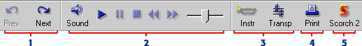

The Scorch toolbar

-
Click Prev and Next to turn the pages of the score.
-
The playback buttons play the score, using Espressivo™,
reverb and full stereo for a realistic effect. A moving line follows the
score as it plays, and there's a slider for adjusting the tempo. Sound
changes which sound device you use for playback.
-
Customers can change the key and instruments used in the score.
-
The score can be printed (if authorised), or a free test print can made
of the first page of the score.
-
Customers can find out more about Scorch and download updates from the
Scorch area of the Sibelius web site.
|